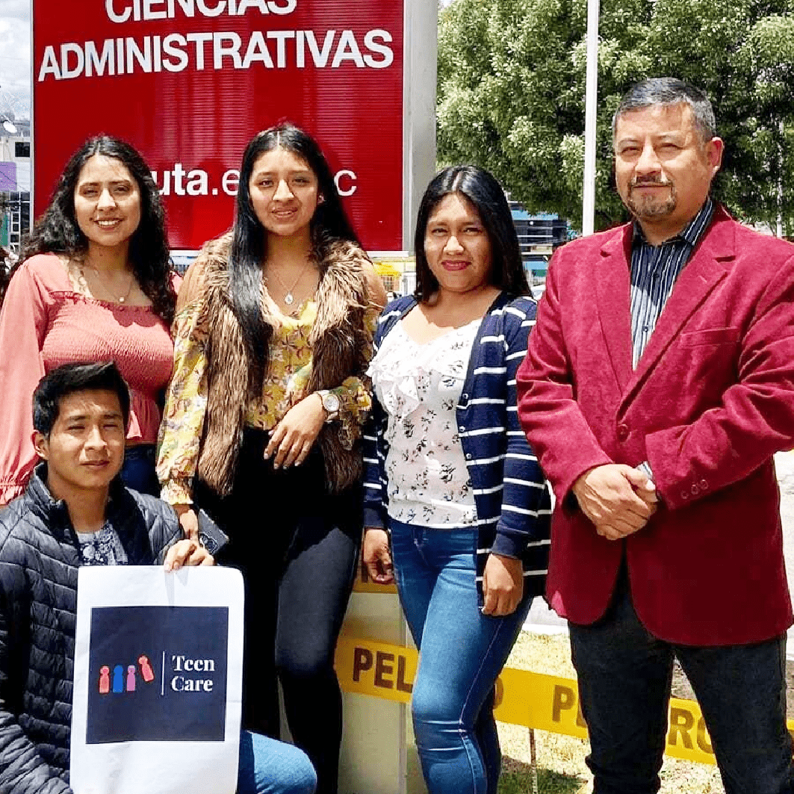

Servicios
Correo Institucional
Ruta de Buses
Sistema Integrado
Biblioteca Virtual
Sala de Prensa
Bolsa de Empleo
Gestión
Rectorado
Vicerrectorado Académico
Vicerrectorado de Investigación
Vicerrectorado Administrativo
Posgrados
Sitio Web
Postulaciones
Misión - Vision
Nosotros
Universidad Técnica de Ambato difunde los resultados de investigaciones académicas y científicas a través de Feria Internacional

‘UTA Emprende 2023’ mostrará los mejores proyectos de emprendimiento, investigación, y vinculación
UTA realiza curso del proceso enfermero y su aplicación en la formación académica
Estudiantes de la UTA se capacitan en Telecomunicación
La Universidad Técnica de Ambato entrega equipos de protección al personal que realiza actividades de alto riesgo
UTA anuncia su IV Congreso Internacional de Economía y Contabilidad
Séptima edición del Congreso Internacional de Investigación en Diseño se desarrolla en la UTA
UTA incorpora primera promoción de graduados en Nutrición y Dietética